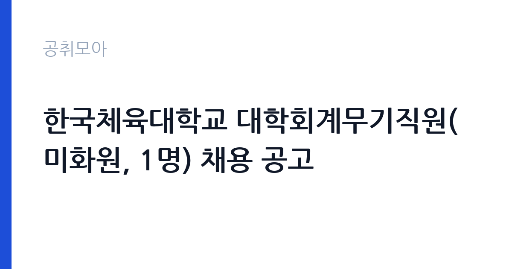

[국가기관] 한국체육대학교 대학회계무기직원(미화원, 1명) 채용 공고
한국체육대학교 · 서울 · 마감 2026-10-30 (D-11) · 출처 나라일터

한눈에 보는 모집 조건
| 기관 | 한국체육대학교 |
|---|---|
| 공고명 | 한국체육대학교 대학회계무기직원(미화원, 1명) 채용 공고 |
| 고용형태 | 공무직 |
| 근무지 | 서울 |
| 게시일 | 2026-10-20 |
| 마감일 | 2026-10-30 (D-11) |
지원자격, 이렇게 읽으세요
- 대학회계무기직원(미화원) 1명
- 접수 ~2026-10-30 마감
- 세부 조건은 원문 공고문 확인
대학회계무기직원은 국가공무원이 아니라 학교가 직접 고용하는 무기계약 신분입니다. 따라서 공무원 채용시험이 아니라 학교 인사규정에 따른 자체 전형을 거칩니다. 지원 자격의 기본은 국가공무원법 제33조의 임용 결격사유가 없고 대한민국 국적을 가진 사람입니다. 미화원 직종은 학력과 경력을 까다롭게 보지 않는 대신, 실제 근무 가능성과 신체 조건을 봅니다. 접수 방식이 특이합니다. 온라인 접수가 아니라 등기우편 또는 직접 방문 접수이고, 봉투 겉면에 응시원서가 들어 있음을 표시해야 합니다. 마감일 소인 기준이 아니라 도착 기준으로 판정되는 경우가 많으므로, 늦어도 마감 이틀 전에는 발송하십시오.
이 공고의 포인트
이 공고의 핵심은 고용 안정성입니다. 미화 업무를 무기계약으로 시작할 수 있는 자리는 많지 않습니다. 계약 기간이 정해지지 않아 매년 재계약을 걱정하지 않아도 되고, 정년까지 근무가 가능합니다. 두 번째는 근무지입니다. 서울 송파구 양재대로에 위치해 지하철 접근이 가능하고, 캠퍼스 규모가 크지 않아 업무 범위가 명확합니다. 세 번째는 절차의 단순함입니다. 공무원 시험이나 대규모 공채와 달리 서류와 면접 중심으로 짧게 진행되는 경우가 많습니다. 다만 접수 창구가 우편과 방문으로 제한되어 있어, 온라인 접수에 익숙한 지원자는 일정을 놓치기 쉽습니다.
전형은 어떻게 진행되나
전형은 서류심사와 면접심사로 진행되는 것이 일반적입니다. 서류에서는 응시원서와 제출서류의 형식 요건을 확인하고, 면접에서는 근무 태도와 직무 적합성을 봅니다. 무기직원 채용은 공개경쟁을 원칙으로 하되, 장애인이나 취업지원대상자에 대한 우대나 제한경쟁이 붙는 경우가 있습니다. 공고문에 우대 조건이 명시돼 있으면 증빙서류를 반드시 첨부하십시오. 최종합격 후에는 신원조회와 채용 신체검사가 이어지고, 결격사유가 없으면 임용됩니다. 서류 반환을 원하면 채용절차의 공정화에 관한 법률에 따라 반환 청구를 할 수 있으니, 제출 목록을 따로 기록해 두면 편합니다.
이런 분께 추천해요
- 서울 송파·강동·성남 일대에서 출퇴근이 가능한 분 — 캠퍼스가 양재대로에 있습니다
- 장기 근무가 가능한 무기직을 찾는 분 — 계약 기간이 정해지지 않은 신분입니다
- 온라인 접수 대신 우편·방문 접수를 직접 챙길 수 있는 분 — 접수 방식이 제한적입니다
지원 전 체크리스트
- 등기우편 도착 기준 마감일을 확인했는가 — 마감 이틀 전 발송을 권합니다
- 봉투 겉면에 응시원서 재중 표시를 했는가 — 미표기 시 분실 위험이 있습니다
- 국가공무원법 제33조 결격사유와 국적 요건을 충족하는가
- 장애인·취업지원대상자 우대 대상이라면 증빙서류를 첨부했는가
모집 일정과 제출 타이밍
마감일은 2026-10-30입니다. 우편 접수는 도착 기준이므로 실질 마감은 그보다 이틀 앞입니다. 권장 일정은 첫날 응시원서를 내려받아 작성하고, 둘째 날 등기로 발송하는 것입니다. 방문 접수를 택한다면 평일 근무시간에 총무과를 찾아가야 하므로 방문 가능 시간을 미리 전화로 확인하십시오. 면접은 서류 합격자에 한해 개별 통보되며, 통보 후 일정이 촉박한 경우가 많습니다. 서류를 낸 뒤에는 연락 가능한 번호를 정확히 기재하고, 문자와 메일을 수시로 확인하십시오.
직무 이해하기: 국가기관
한국체육대학교는 체육 특성화 국립대학으로, 운동부 선수와 체육 전공 학생이 함께 생활하는 캠퍼스입니다. 미화원은 강의동, 행정동, 체육관, 기숙사 주변 등 캠퍼스 전반의 청소와 위생 관리를 맡습니다. 구체적으로는 강의실과 화장실 청소, 쓰레기 분리수거와 배출, 행사 전후 정리, 청소 용품과 장비 관리가 핵심 업무입니다. 체육관과 실내 체육시설은 사용 인원이 많아 오염이 빨리 생기므로, 정해진 시간 안에 동선을 효율적으로 도는 것이 중요합니다. 학기 중에는 수업과 행사 일정에 맞춰 근무 시간이 조정될 수 있고, 방학 중에는 대청소와 시설 정비 업무가 늘어납니다.
자기소개서 작성 팁
무기직원 지원서에서 자기소개서를 요구하는 경우, 평가자가 보는 것은 성실성과 지속성입니다. 첫 문단에 지원 동기를 짧게 쓰고, 본론에는 청소·시설 관리·서비스 업무 경험을 구체적으로 적으십시오. 몇 년간 근무했는지, 어떤 공간을 담당했는지, 어떤 기준으로 청결을 유지했는지가 핵심입니다. 경력이 없다면 가정이나 아르바이트에서 반복적으로 해온 일을 성실하게 해낸 사례로 대체할 수 있습니다. 마무리에는 장기 근무 의사를 분명히 밝히십시오. 무기직 채용에서 가장 큰 감점 요인은 짧은 근무 후 이직이 반복된 이력이므로, 이력서의 근무 기간이 들쭉날쭉하다면 그 사유를 한 줄로 설명하는 편이 낫습니다.
면접 준비 포인트
면접은 길지 않습니다. 자주 나오는 질문은 지원 동기, 이전 근무지에서 맡은 업무, 힘든 일을 어떻게 처리했는지, 그리고 근무 시간과 출퇴근에 문제가 없는지입니다. 청소 업무는 체력과 꼼꼼함이 함께 필요하므로, 구체적인 작업 순서를 말할 수 있으면 신뢰를 줍니다. 예를 들어 화장실 청소를 언제 어떤 순서로 하는지, 안전사고를 막기 위해 어떤 조치를 하는지를 설명하십시오. 복장은 단정하게 하고, 질문에는 짧고 분명하게 답하십시오. 캠퍼스에 학생과 선수가 함께 생활한다는 점을 이해하고 있다는 인상을 주면 좋습니다.
급여·근무조건 읽는 법
보수는 대학회계직원 보수표에 따라 정해지며, 원문 공고문에 처우 조건이 제시됩니다. 이번 공고에서는 연봉이나 월급 수치가 공개되지 않았으므로 구체적인 금액은 원문에서 확인하셔야 합니다. 대학회계 무기직원은 국가공무원 보수규정이 아니라 학교가 정한 보수표를 적용받고, 여기에 각종 수당과 복리후생이 붙습니다. 무기계약 신분이므로 4대 보험과 퇴직급여가 적용되고, 정년까지 근무가 가능합니다. 실수령액은 기본급에서 세금과 보험료를 뺀 값이므로 표기된 보수와 차이가 납니다. 급여 수준을 비교할 때는 월급 표기액보다 연간 총보수와 수당 구성을 함께 보십시오.
자주 묻는 질문
- 무기직원은 공무원인가요?
아닙니다. 학교가 직접 고용하는 대학회계 무기계약 신분으로, 공무원이 아니라 근로기준법이 적용되는 근로자입니다. - 온라인으로 접수할 수 있나요?
이 공고는 등기우편과 직접 방문 접수만 안내하고 있습니다. 봉투 겉면에 응시원서 재중 표시를 하고, 도착 기준 마감일에 유의하십시오. - 급여는 얼마인가요?
대학회계직원 보수표를 적용합니다. 이번 공고에는 금액이 공개되지 않았으므로 원문 공고문의 처우 항목에서 확인하십시오.
함께 보면 좋은 공고
[국가기관] 2026년 제5회 국립부곡병원 의무직 공무원 경력경쟁채용시험 공고 — 마감 2026-10-30[국가기관] 2026년 수도권대기환경청 기간제근로자 채용 공고 — 마감 2026-10-28[국가기관] 경북대학교 국제처 글로벌교육센터 2026년 제2회 한국어연수과정 신규 강사(기간제) 채용 공고 — 마감 2026-10-30출처: 나라일터 공개정보를 바탕으로 공취모아가 정리한 안내글입니다. 모집 조건·일정은 변경될 수 있으니 지원 전 반드시 원문 공고문을 확인하세요. 본 글은 정보 제공용이며 합격을 보장하지 않습니다.